사실 배송이 늦어져서 다이소에서 구매할 수 있는 혼자놀기 용품들을 사보았다..
보급형 다이소버전 set랄까....ㅎ
사실 이것만 가지고 하루를 보내기는 조금 역부족이라고 생각이 들었다. 하지만 인내심을 가지고 기다리면 반려새우를 GET!할 수 있다.
수정키우기가 더 쉽고 관상으로 더 예쁘지 않았을까 생각은 든다. LED수정키우기 하고싶었는데...
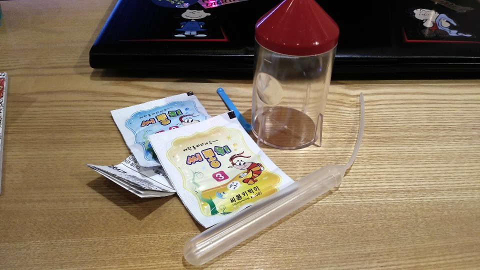씨몽키의 구성은 생각보다 단순했다
설명서
씨몽키 알
먹이
설명서
먹이 숟가락
으로 구성이 되어있는데, 일단 3세용이다.
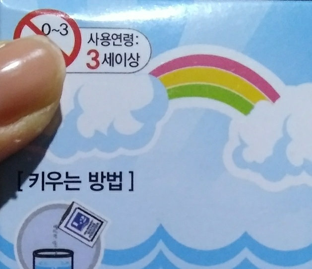원래 제 나이 때하라고 하는 것은 재미없지 않은가...ㅎ 22살 혼자놀기는 3세용으로!
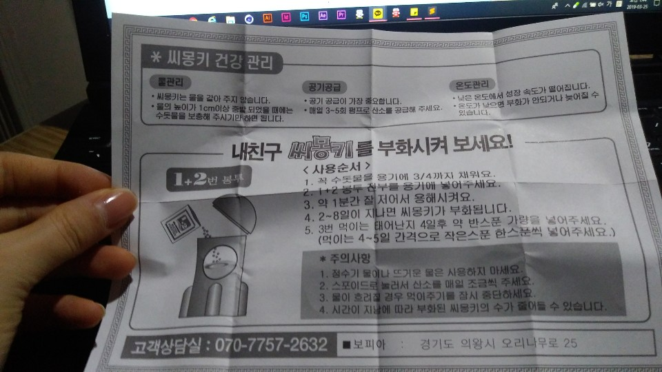일단 설명서에는 수돗물을 담고...
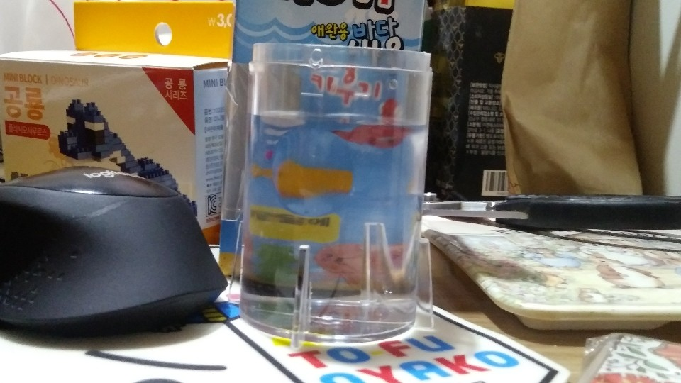씨몽키 알 넣고...
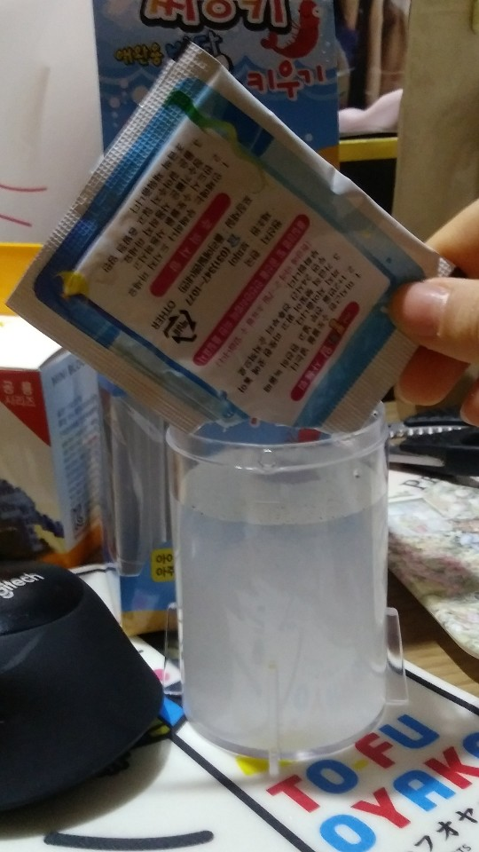씨몽키들이 태어날 수 있도록 열심히 용해시켜주었다
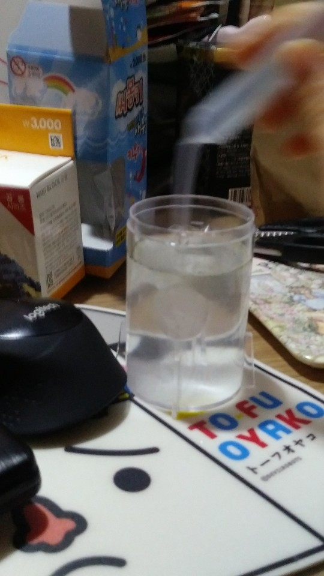와...완성...
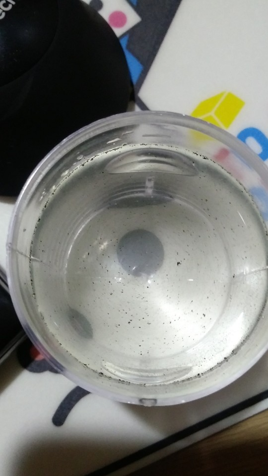마치... 물에 쇳가루 흘린느낌? 이거 까만게 알이라고한다...
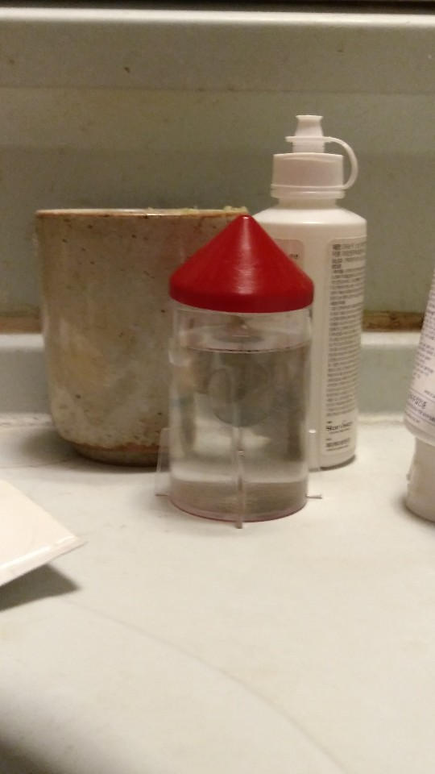사실 이 친구들이 부화할 수 있을지는 의문이다. 주말에 안 올지 몰랐지... 배송이
그리고 얘도 문제야...
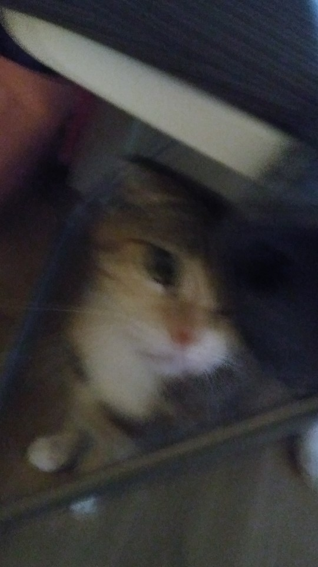야옹... 씨몽키 미안해...
시간은 정말 잘 간다 아무생각 없이 블럭에만 집중할 수 있었다.
블럭이 너무 작아서 없어지면 공룡을 다 만들 수 없을지도 모른다. 그리고 블럭이 너무 연약해서 잘 끼워지지 않아서 화가났다.하하
하지만 가격대비 괜찮다고 생각이들었다. 새벽에 하는 것은 비추천 7번까지 만든 거 다시 처음부터 만들어야 할 수 있음.
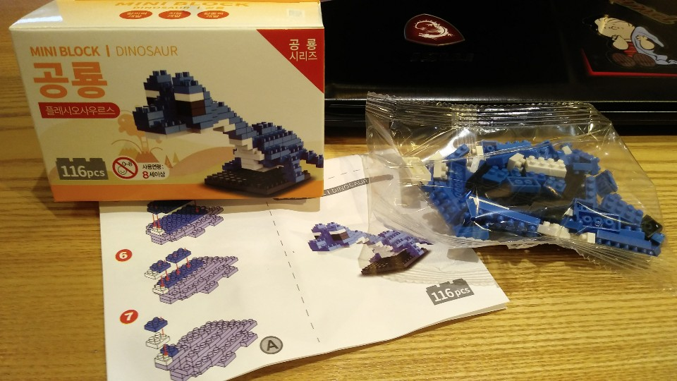MINI블럭의 피스는 총 116피스로 모델은 플레시오사우르스라고한다.
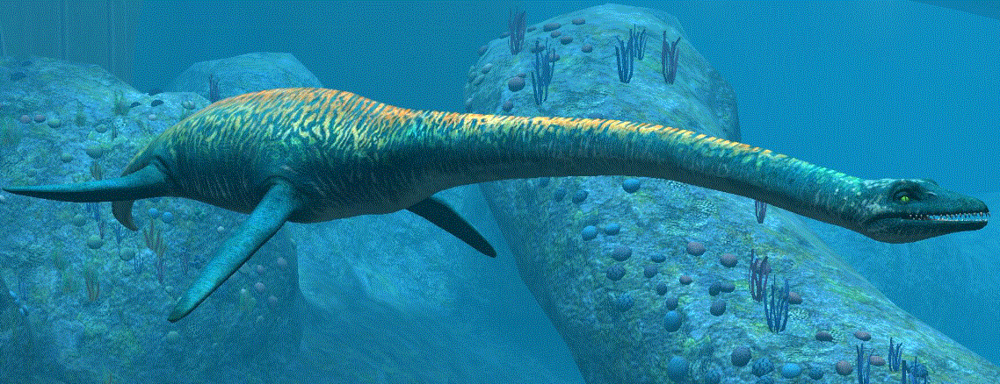...?
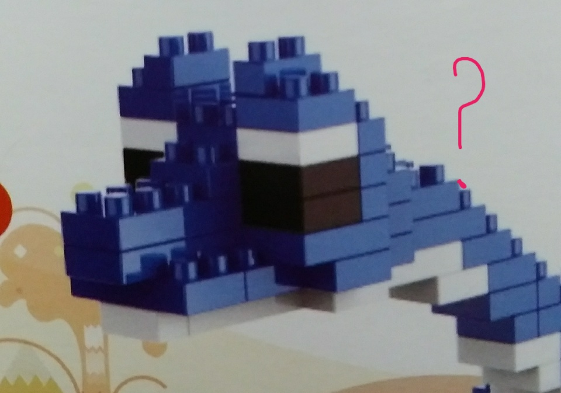아무튼 만들어 보자
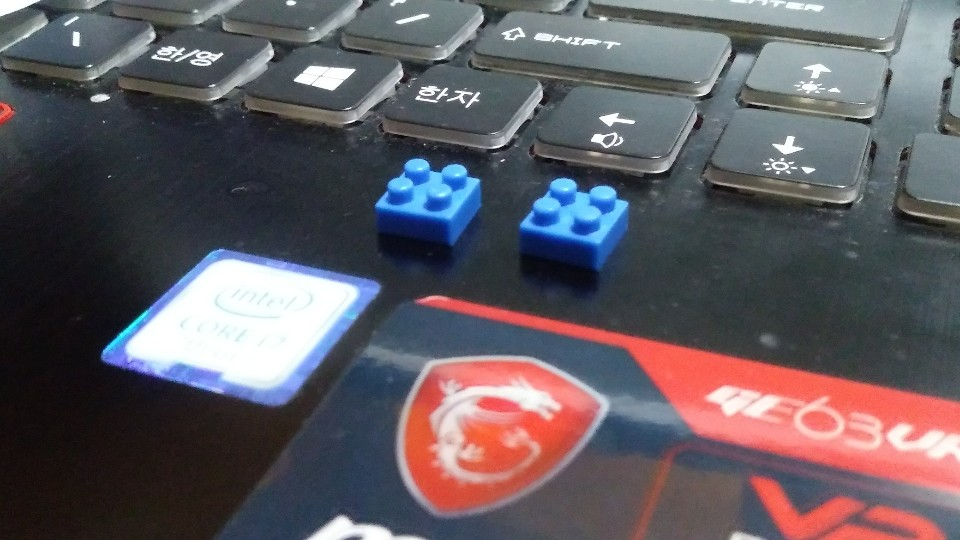너무 작아. 내 키보드 4분에 1만하다.
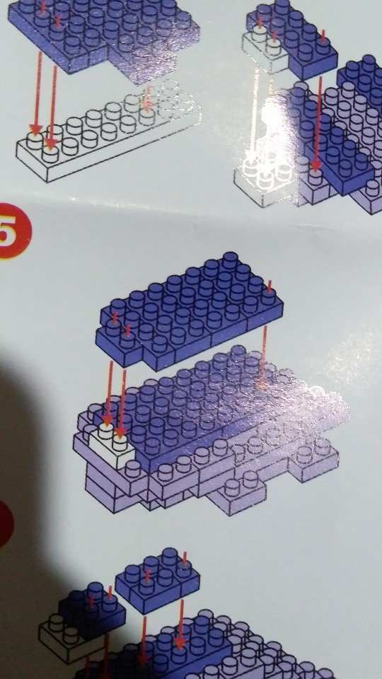상당히 헷갈린다... 작은 거 긴 거 막 섞여서 혼돈 그자체...
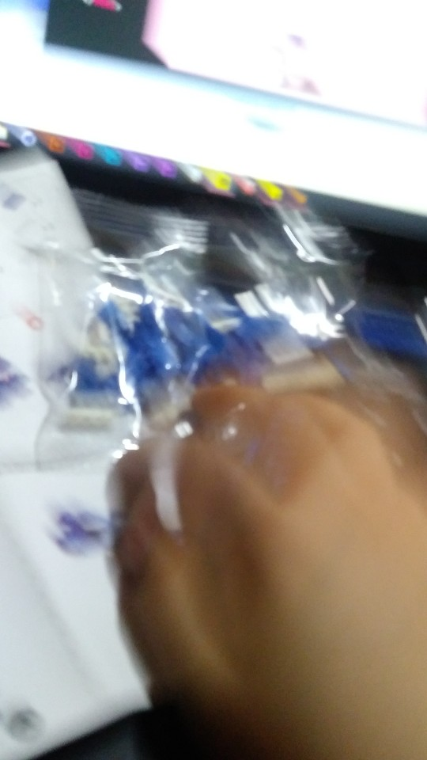...
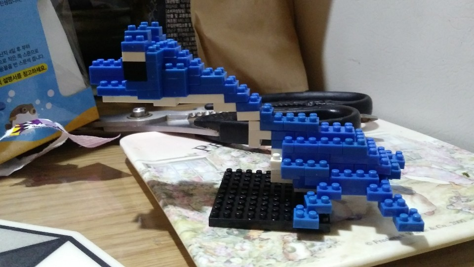완성~! 참 쉽죠..?
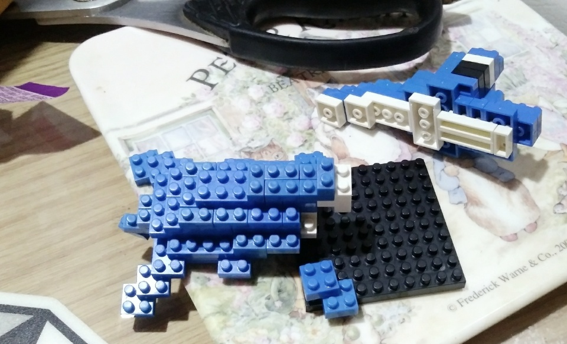ㅎ앟...
생각보다 장 수도 많았고, 휴대하기에도 편리했다.
사실 누가 컬러링북을 휴대하고 다니나 싶긴하지만 가격대비 만족스러웠다.
그리고 사용할 때 색연필을 뾰족하게 깎아야 잘 칠할 수 있다.
그림도 귀여웠던 편!